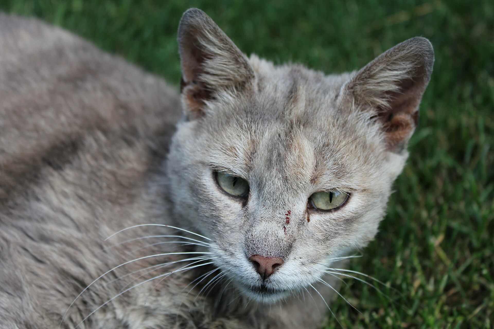
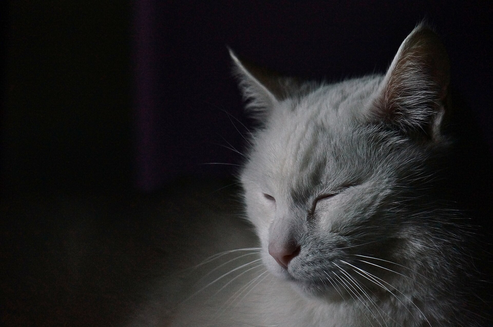
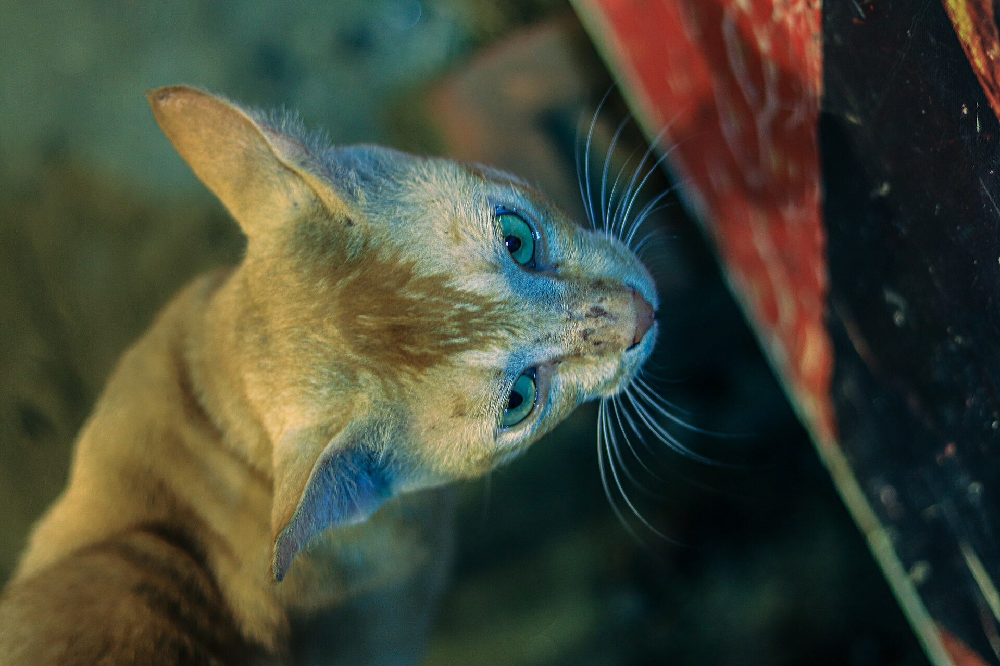

ブログ
猫の年齢を人間に換算すると何歳？早見表と年代別の暮らし方
公開 2026-11-09・日本ねこ編集部
結論から言うと、猫は2歳で人間の24歳にあたり、そのあとは1年に約4歳ずつ増えていきます。1歳は15〜18歳と資料によって幅があります。7歳は44歳で、シニアの入り口です。

写真：Marko Milivojevic (Pixnio)（CC0 1.0）
うちの子は人間でいうと何歳なのだろう。そう思ったことはありませんか。猫は最初の1〜2年でぐんぐん成長するので、人間と同じ数え方ではうまく測れません。
この記事では換算の早見表と、年代ごとの暮らし方のポイントをまとめました。数字はあくまで目安です。猫の体質や暮らし方で個体差があります。
猫の年齢を人間に換算した早見表
民間の換算表では、2歳が24歳で7歳が44歳という数字がほぼそろっています。2歳以降は1年ごとに人間の約4年分ずつ増える考え方が共通しています。下の表はこの考え方で計算した目安です。
| 猫の年齢 | 人間に換算 | ステージの目安 |
|---|
| 1歳 | 15〜18歳 | 成長期の終わり |
| 2歳 | 24歳 | ヤングアダルト |
| 3歳 | 28歳 | ヤングアダルト |
| 5歳 | 36歳 | ヤングアダルト |
| 7歳 | 44歳 | シニアの入り口 |
| 10歳 | 56歳 | 高齢期 |
| 12歳 | 64歳 | 高齢期の終わり |
| 15歳 | 76歳 | 超高齢期 |
| 18歳 | 88歳 | 超高齢期 |
| 20歳 | 96歳 | 超高齢期 |
1歳の数字だけは15歳とする資料と18歳とする資料があります。そのためこの記事では幅をもたせて書いています。単純に猫の年齢に何倍かするだけでは測れないことがわかります。
手軽に換算したいときは猫の年齢早見表（猫雑学）もどうぞ。
猫の寿命はどのくらい？
ペットフード協会の調査（令和5年）では、猫の平均寿命は15.79歳と紹介されています。完全に室内で飼われている猫は16.25歳で、外に出る猫は14.18歳とされています。事故や感染症のリスクが室内のほうが低いことが理由として挙げられています。

写真：ABCDéLTDP（CC0 1.0）
平均寿命は延びる傾向にあるとも伝えられています。20歳を超える猫もいますが、これは一部の話です。うちの子の毎日を丁寧に見てあげることがいちばんの長生き対策です。
なぜ最初の2年で一気に歳をとるの？
猫は人間よりも早いスピードで成長するといわれます。生まれて1年ほどで体はほぼ大人に近づきます。その後の歩みはゆるやかになり、2歳以降は1年に約4歳ずつの増え方になります。
換算表はどれも同じ考え方で作られていますが、1歳の数字だけは15歳と18歳のように資料で分かれます。どちらが正しいとは言い切れません。成長の目安として見てください。
うちの子の年齢がわからないときは
保護猫や外で出会った猫は、正確な年齢がわからないことがあります。その場合は動物病院で体つきや歯の状態などから推定してもらえます。推定年齢はあくまで目安ですが、健康診断のタイミングを決める手がかりになります。
年代別の暮らし方のポイント
0〜1歳：成長期
体がどんどん大きくなる時期です。ごはんは子猫用を与えてワクチンや避妊・去勢の相談もこの時期に済ませます。遊びを通して人や家に慣れていきます。
1〜6歳：ヤングアダルト
体力も好奇心も充実した時期です。ペットケア系の解説では年1回の健康診断が目安とされています。太りやすくなる子もいるので、体重とごはんの量を見直しましょう。
7〜12歳：高齢期
ピュリナ研究所の資料では7歳ごろからシニアの仲間入りとされています。見た目が若々しくても体の中は少しずつ変わっていきます。ペットケア系の解説では、シニアは半年に1回の健康診断が目安です。
12歳以上：超高齢期
ピュリナ研究所の資料では12歳以上を超高齢期と分けています。眠る時間が増えたり鳴き声が変わったりトイレの習慣が変わったりすることがあります。段差を減らして寝床とトイレを近くに置くなど、暮らしやすさを見直してみましょう。

写真：A S M Jobaer（CC BY-SA 4.0）
シニア期に気をつけたいこと
- 水分：飲む量の変化は体調のサインになることがあります。くわしくは猫が冬に水を飲まないときは？をご覧ください。
- 寒さ：高齢の猫は冷えに弱くなります。部屋の温度は猫の寒さ対策ガイドが参考になります。
- 体重：月に1回ほど量って記録しておくと変化に気づきやすくなります。
- 爪とお手入れ：歳を重ねると爪とぎが減って爪が伸びすぎることがあります。
こんなときは動物病院へ
年齢に関係なく次のような様子があれば早めにかかりつけの動物病院に相談してください。
- 食欲がない日が続く
- 水を飲む量やおしっこの量が急に変わった
- 体重が少しずつ減っている
- トイレ以外の場所で粗相するようになった
- 高いところに登らなくなった・動きたがらない
「歳のせい」と思っていた変化が病気のサインだったという例もあります。気になったときは様子を見すぎずに相談するのが安心です。
まとめ
年齢の換算は、うちの子がいまどの時期にいるかを知る手がかりです。数字に一喜一憂せずその子のペースに合わせて暮らしを整えてあげてください。
うちの子は何歳ですか？Instagramで #JapanNeko をつけて、年齢と写真を見せてください。
参考にした情報
この記事は一般的な情報をまとめたものです。換算の数字は資料によって幅があり、猫の体質や暮らし方で個体差があります。気になる様子があればかかりつけの動物病院に相談してください。
よくある質問
猫の1歳は人間の何歳ですか？
資料によって15歳とするものと18歳とするものがあります。目安は15〜18歳です。2歳は24歳でほぼ一致しています。
猫は何歳からシニアですか？
ピュリナ研究所の資料では、7歳ごろからシニアの仲間入りとされています。7〜12歳を高齢期で12歳以上を超高齢期と分ける考え方が紹介されています。
猫の平均寿命はどのくらいですか？
ペットフード協会の調査では、猫の平均寿命は15.79歳と紹介されています。完全に室内で飼われている猫は16.25歳で、外に出る猫は14.18歳とされています。個体差が大きいので目安として見てください。
健康診断はどのくらいの頻度で受けたほうがいいですか？
ペットケア系の解説では、1〜6歳は年1回でシニアは半年に1回が目安とされています。猫の状態によって変わるので、かかりつけの動物病院と相談して決めましょう。